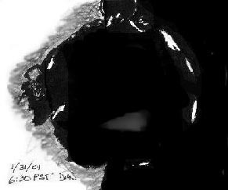
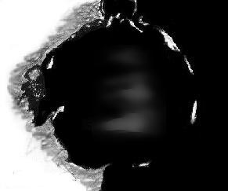

|  |
|  |
If this looks the same in the newsletter as on my screen, you'll see a very faint dark gray smudge just below center - barely on the edge of visibility.
This seemed especially odd to me, since things on the moon are mostly supposed to be either bright or dark - there is no atmosphere to scatter light and create midtones.
How did this happen?
Note that all these drawings are digitally modified versions of the last (dated) image.
After about fifteen minutes passed, the smudge was both clearer and more easily seen.
Further, it was being joined by another smaller brightening above it. On the edge of visibility, I seemed to detect yet another area, perhaps two.
At this point I was sure this was some weird sunrise effect, but not one I'd noticed before.
Normally, sunrise would start at the side closest the terminator and the shadows of the anti-terminatorward walls would be clearly seen.
Finally, about a half hour later, it was obvious what was happening: the domed shape of the huge crater was high enough to be lit long before the shadow shapes from the left walls were obvious, though at this point I assumed that must be what is causing the "comet shape" of the bright areas.
Okay, now I knew the why of "where," but the why of an increasing gray scale was still puzzling: why not just areas of brightness and darkness as you'd normally see in a crater at sunrise?
While I was watching this happen, I was also reporting the event to some friends via email.
One of them, Mark Taylor, suggested an explanation that I find completely satisfactory: The floor of Ptolemaeus is known to not be smooth, but slightly rough. Each of the high points in this rough surface, at the ideal oblique angle the light hits it, acts like a "pixel" on your monitor, lighting up just at the tip. As the light is able to illuminate more and more of each dot, the seeming "grayscale" grows lighter.
It's not entirely clear to me why this would happen in Ptolemaeus and not with such effect elsewhere, but its size and placement near "our" center of view may play a part... nevertheless, this kind of weirdness is par for the course on the moon.
Why I haven't noticed this before, I don't know. I'd swear I've watched sunrise at Ptolemaeus before, even at this stage. But maybe I just wasn't looking closely enough. I have no reason to believe this apparition in any way unique to this season - the same thing was seen by Bill Arnett of nineplanets.org last summer.
I quote: "This evening as I was showing off my observatory, I noticed that the Sun was about to rise over Ptolemaeus. About midnight I checked again and still nothing but a spot of light on the far (western) rim. But as the Moon sank lower in my sky, the Sun rose on my target on the Moon and the race was on! At first I thought I could see a slight brightening in the middle of the floor. I went in for a while to see if anything would change. By a little before 1 a.m. there was a very neat quartet of bright streaks in the middle of the crater floor. I interpret these as the Sun shining through low valleys in the eastern rim onto a dome shaped floor (perhaps the dome shape is due to the spherical nature of the Moon?). As the Moon sank lower the rays got brighter and wider. By the time it disappeared below my neighbor's roof (only 4 degrees up :-) the rays had merged together and about half the crater floor was bright except for a long shadow from one of the easern rim peaks..."
So, if you want to watch for the sun to rise again on Ptolemy, there's every reason to believe you can see this too!